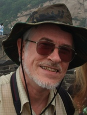
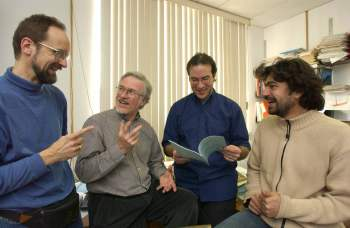

|
Statut: Téléphone: Courriel: |
Professeur Titulaire Université de Montréal Département de sciences biologiques Bureau: (514) 343-7591 Pierre.Legendre@umontreal.ca |
 |
Prix et Distinctions
- Prix Adrien-Pouliot (Coopération scientifique avec la France) de l’Association francophone pour le savoir (Acfas), 2015
- Web of Science Highly Cited Researcher in Environment/Ecology en 2014, 2015 et 2016
- Prix 2013 du Président de la Société canadienne d’écologie et d’évolution
- Prix 2011 d'excellence en enseignement
- Officier de l'Ordre national du Québec
- Prix du Québec - Prix Marie-Victorin 2005
- ISI Highly Cited Researcher 2001 in Ecology/Environment
- Profil Google Scholar
Numerical Ecology, 3rd English edition
Date de publication: 6 juillet 2012 Errata pour les copies vendues entre juillet 2012 et mai 2014 |
Numerical ecology with RParu en janvier 2011Auteurs: Daniel Borcard, François Gillet et Pierre LegendreISBN 978-1-4419-7975-9 e-ISBN 978-1-4419-7976-6 Article Forum sur ce livre |
Membres du labo

De gauche à droite: Daniel Borcard, Pierre Legendre, Pedro Peres-Neto et
Stéphane Dray.
Photo: Bernard Lambert, Direction des communications,
Université de Montréal.
- Daniel Borcard (daniel.borcard@umontreal.ca), chercheur sénior
- Alix Boc (alix.boc@umontreal.ca), chercheur postdoctoral
- Philippe Casgrain (casgrain@invite.umontreal.ca), bio-informaticien
- Jean-Martin Chamberland (jean-martin.chamberland@umontreal.ca), auxiliaire de recherche
- Guillaume Guénard (guillaume.guenard@gmail.com), chercheur postdoctoral
- Steven C. Walker (steven.walker@umontreal.ca), chercheur postdoctoral
Entrevue avec Louis et Pierre Legendre
Lexique anglais-français d'écologie numérique et de statistique
Bibliographie ACC: utilisation de l'ACC dans de nombreuses publications, un travail de John Birks.
Chercheur postdoctoral au Genetiska Institutionen, à Lunds Universitet, Suède, en 1971-72. Il est recruté par l'Université du Québec à Montréal en 1972, où il est d'abord Associé de recherche, puis Directeur de recherche au Centre de recherche en sciences de l'environnement, et finalement Professeur au Département de physique en 1980. En 1980, il devient Professeur agrégé au Département de sciences biologiques de l'Université de Montréal, puis Professeur titulaire en 1984.
- Lauréat du prix Michel-Jurdant 1986 (sciences de l'environnement) de l'Association canadienne-française pour l'avancement des sciences (ACFAS).
- Boursier Killam du Conseil des Arts du Canada pour 1989-91
- élu membre de la Société royale du Canada (Académie des sciences) en 1992.
- Lauréat du Distinguished Statistical Ecologist Award décerné par le International Congress of Ecology en 1994 et de la médaille Romanowski (sciences de l'environnement) de la Société royale du Canada en 1995.
- Prix Marie-Victorin du Gouvernement du Québec en 2005.
- Officier de l'Ordre national du Québec en 2007
- Lauréat du Prix 2011 d'excellence en enseignement, catégorie des professeurs titulaires, décerné par l'Université de Montréal
- Lauréat du Prix 2011 d'excellence en enseignement, catégorie des professeurs du secteur sciences, décerné par la Faculté des Arts et des Sciences de l'Université de Montréal.